注册的时候赋值了不存在的参数：
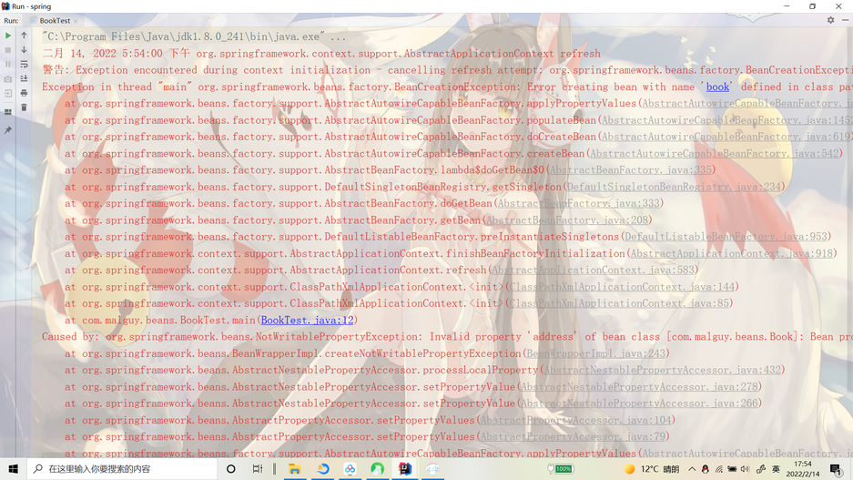
内部bean设置错误报错
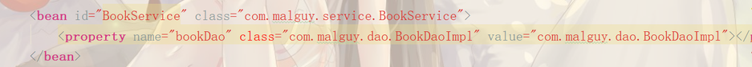
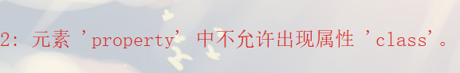
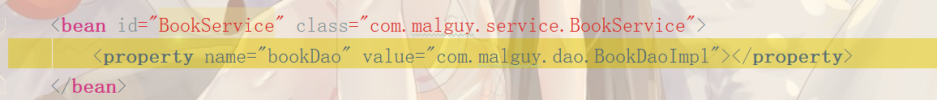
不能在内部类配置接口多态
debug
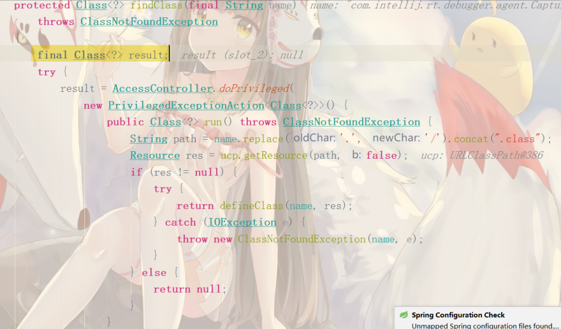
首先传入name字符串（应该是通过配置文件或别的方式），然后把 . 换成 / ，在接上class（其实就是获取name对应的类的路径），然后通过ucp的getresource方法寻找类，如果不为空就返回一个类，否则返回null
此时result为null，返回类未找到异常
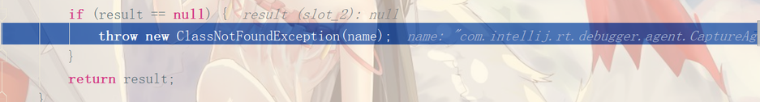
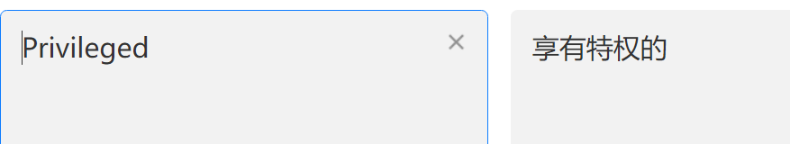
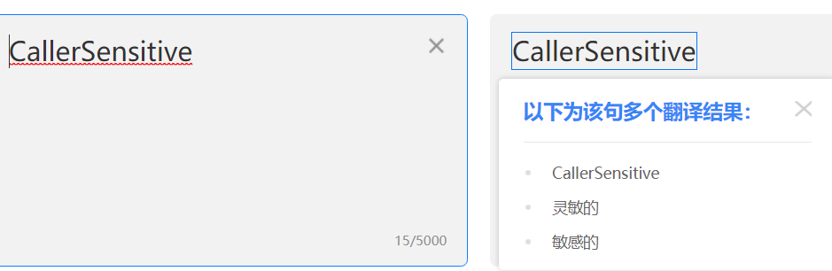
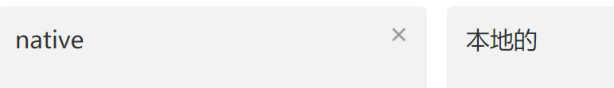
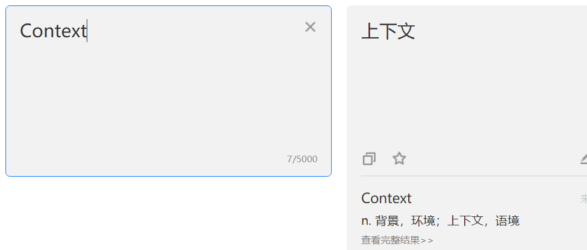
解决：修改配置文件
内部声明对象不能用property直接创建
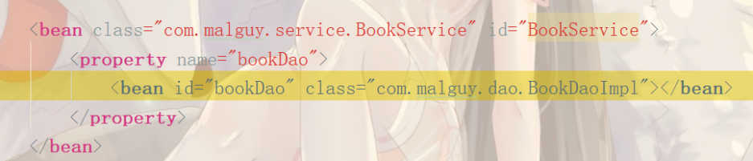
内部类未添加set方法而报错
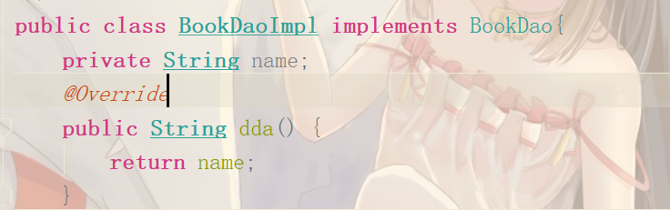
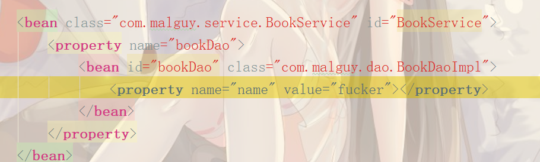
配置文件会调用set方法来赋值

解决
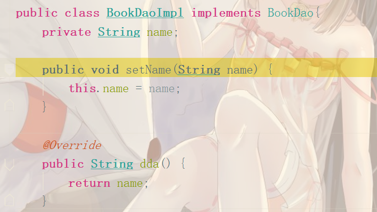
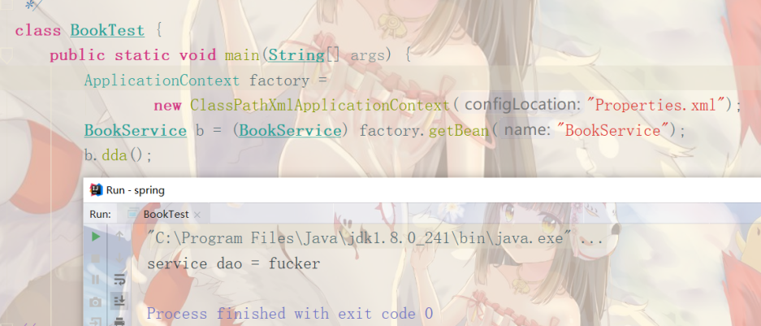
外部类set和get方法齐全并创建了对象和属性，引用方未设置set方法

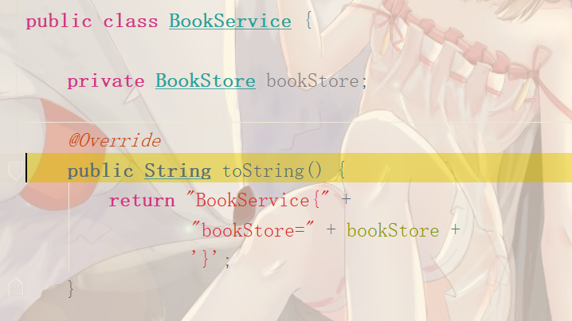
在创建属性时会调用set方法，引用类没set方法就无法让外部类赋值过来
创建内部类的属性时，没设置get方法（类就无法调用内部类的属性），报错
这里面还有一个错误：调用内部类属性需要xxx.xx这种命名方式，外部类的名字必须和内部类的外部类属性名一致
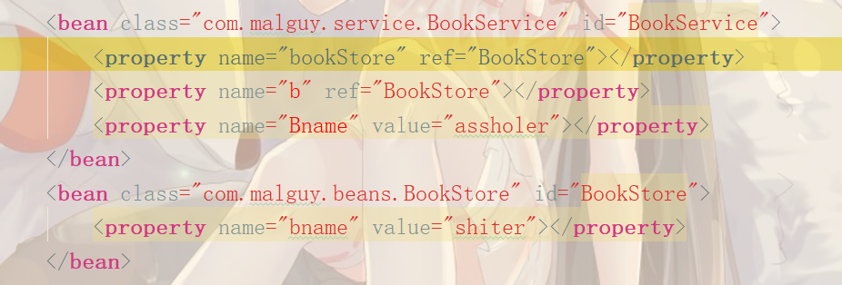
改正：
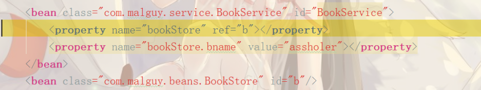
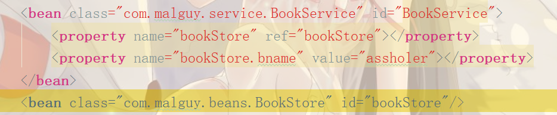
xml配置错误
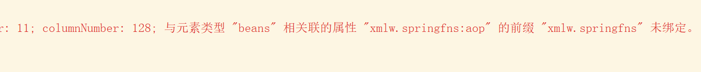
更正
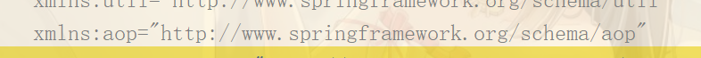
按照名称注入报错
解决，默认bean名是类名且首字母小写
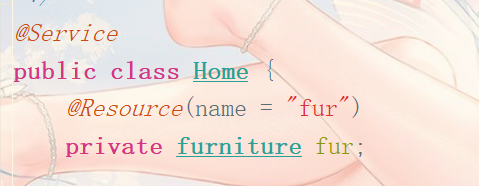
过时的数据库api

把com.mysql.jdbc.Driver改为com.mysql.cj.jdbc.Driver
数据库参数不匹配
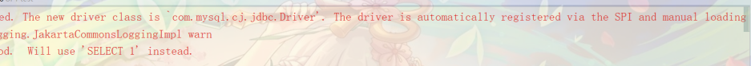
args参数要和数据库完全匹配，不能多也不能少
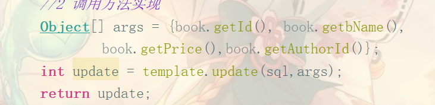
未指定映射类
使用BeanPropertyRowMapper时，构造器未传递参数
解决：在构造器里传递要映射的类Book.class
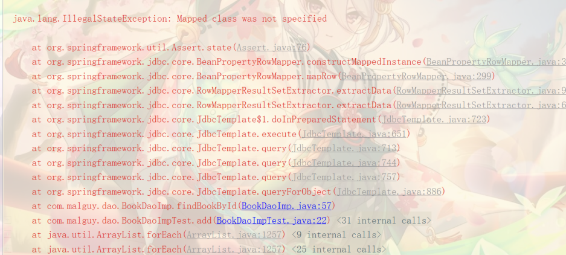